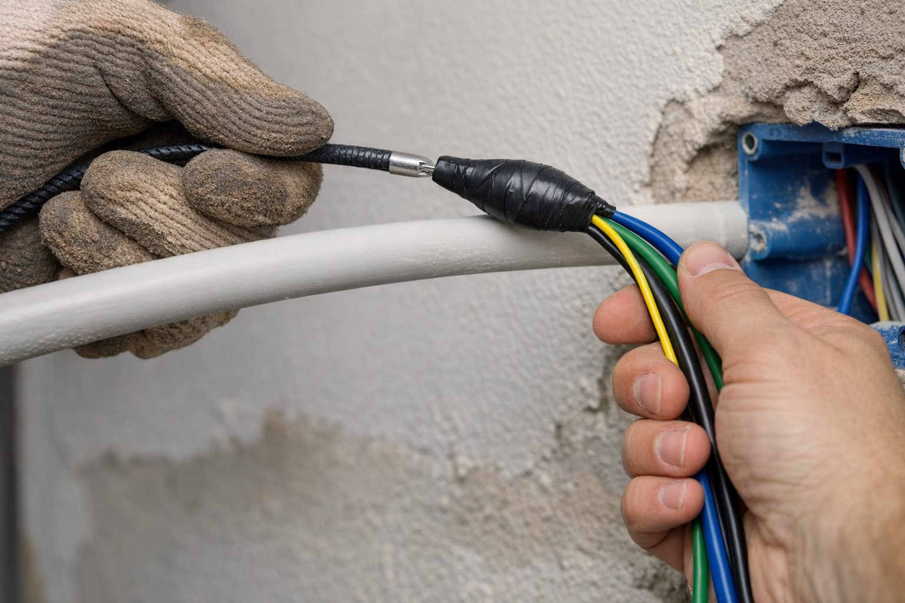

Guia em Instalações Elétricas Residenciais | Aula 18
Infraestrutura, Dimensionamento e Técnicas de Passagem de Cabos
A infraestrutura é a espinha dorsal de qualquer instalação elétrica segura e durável. Aqui, serão apresentados componentes essenciais (eletrodutos, leitos, eletrocalhas, caixas de passagem e QDC), o dimensionamento e as boas práticas de passagem de condutores à luz da NBR 5410.
A escolha correta da infraestrutura garante a proteção mecânica dos cabos e a facilidade de manutenção futura. Veja os principais componentes utilizados em projetos residenciais e prediais:
Corrugado de alta resistência mecânica ($750\text{ N}/5\text{cm}$). Ideal para ser embutido em lajes de concreto e contra-pisos sujeitos a esmagamento.
Corrugado leve ($320\text{ N}/5\text{cm}$). Indicado exclusivamente para paredes de alvenaria e estruturas de drywall. Proibido em lajes.
Utilizado em instalações aparentes (garagens, áreas técnicas) ou redes subterrâneas. Garante alinhamento estético e proteção robusta.
Oferece máxima proteção mecânica contra impactos e incêndios. Essencial em áreas industriais, comerciais e subsolos prediais.
Construído em fita de aço galvanizado (com ou sem revestimento em PVC). Utilizado na terminação e ligação de motores e máquinas sujeitas a vibração ou movimentação mecânica.
Bandejas metálicas ou de PVC para conduzir múltiplos circuitos em shafts, teto de subsolos prediais e corredores técnicos.
Canais metálicos padronizados para sustentação de luminárias comerciais/industriais e passagem de fiação leve em garagens.
Estruturas abertas de alta capacidade mecânica, projetadas para sustentação de cabos alimentadores pesados em prumadas verticais.
Em grandes empreendimentos prediais e habitacionais, utiliza-se a técnica de infraestrutura pré-montada (kits elétricos) inserida diretamente em paredes de concreto estrutural. A infraestrutura não é cortada na alvenaria, mas sim concretada junto com a estrutura da edificação.
Conjuntos pré-cortados com eletrodutos reforçados, fiação/guias e caixas de tomada com tampas estanques (que impedem a entrada da nata de cimento durante o bombeamento).
As caixas abrigam as conexões de condutores, chaves, interruptores e tomadas, além de permitir o enfiamento e manutenção dos cabos.
Modelos embutidos retangulares ou quadrados para fixação de módulos de tomadas, interruptores e caixas de emenda.
Instalada no centro das lajes/tetos para ponto de iluminação central e como nó de distribuição de eletrodutos.
Caixas em alumínio injetado ou PVC rígido para conexões aparentes em garagens, escritórios e áreas industriais (tipos C, E, LL, LR, T, X).
Caixas de alvenaria ou polietileno enterradas no solo para interligação de alimentadores gerais, iluminação externa ou blocos de condomínios.
Para calcular a ocupação interna do eletroduto, deve-se considerar a área externa total (seção total) do cabo, contando condutor e isolamento (Valores médios para cabos 750V PVC segundo NBR NM 247-3):
| Seção Nominal ($mm^2$) | Diâmetro Externo Máx. Aprox. ($mm$) | Seção Total Externa ($S_{tc}$) ($mm^2$) |
|---|---|---|
| 1,5 | 3,0 | 7,1 |
| 2,5 | 3,6 | 10,2 |
| 4,0 | 4,1 | 13,2 |
| 6,0 | 4,7 | 17,3 |
| 10,0 | 6,1 | 29,2 |
| 16,0 | 7,2 | 40,7 |
| 25,0 | 8,9 | 62,2 |
O espaço vazio no eletroduto é vital para a dissipação de calor e para permitir a retirada ou adição de condutores futuramente. Esses limites garantem a dissipação térmica e evitam superaquecimento dos condutores:
| Quantidade de Condutores no Eletroduto | Ocupação Máxima da Área Interna Útil |
|---|---|
| 1 condutor | 53% |
| 2 condutores | 31% |
| 3 ou mais condutores | 40% |
Abaixo apresenta-se a seção interna real dos eletrodutos flexíveis corrugados (linha Tigreflex® para até 1″) e de dutos subterrâneos em PEAD (para 1 1/4″ e 1 1/2″), juntamente com o limite máximo de ocupação de 40% conforme a NBR 5410:
| Bitola Comercial (pol) | DN (mm) | Tipo / Aplicação | Diâmetro Interno ($D_i$) | Seção Total Interna | Área Útil (Taxa 40%) |
|---|---|---|---|---|---|
| 1/2″ | 20 mm | PVC Corrugado (Tigreflex®) | 15,4 mm | 186,3 mm² | 74,5 mm² |
| 3/4″ | 25 mm | PVC Corrugado (Tigreflex®) | 19,0 mm | 283,5 mm² | 113,4 mm² |
| 1″ | 32 mm | PVC Corrugado (Tigreflex®) | 25,0 mm | 490,9 mm² | 196,3 mm² |
| 1 1/4″ | 40 mm | PEAD Duto Flexível (Subterrâneo) | 30,0 mm | 706,9 mm² | 282,7 mm² |
| 1 1/2″ | 50 mm | PEAD Duto Flexível (Subterrâneo) | 38,0 mm | 1134,1 mm² | 453,6 mm² |
Passo 1: Seção total ocupada pelos condutores ($S_{cabos}$):
Conforme a tabela da Seção 3, cada cabo de $6,0\text{ mm}^2$ possui área externa total de $17,3\text{ mm}^2$.
Passo 2: Área Mínima Total Interna do Eletroduto (Taxa a 40%):
Passo 3: Seleção pela Tabela de Eletrodutos (Seção 4.2):
Conclusão: Recomenda-se a utilização do eletroduto de **3/4″ (25 mm)** para garantir a taxa de ocupação exigida pela NBR 5410 e facilitar o enfiamento dos cabos sem danificar a isolação.
A correta passagem de condutores garante a integridade da isolação, evita danos mecânicos aos cabos e facilita futuras manutenções.
Antes de iniciar, certifique-se de que a tubulação esteja limpa e livre de obstruções. O uso de ferramentas inadequadas pode causar danos permanentes aos cabos.

Nem sempre a passagem ocorre como o planejado. Aqui estão as soluções para os impasses mais comuns de campo:
O QDC é o coração da instalação elétrica. Ele centraliza os dispositivos de proteção, seccionamento e distribuição dos circuitos alimentadores e terminais, tanto em sistemas residenciais quanto prediais.
Protege os condutores contra sobrecargas e curtos-circuitos. Disponível nos padrões DIN (trilho) e NEMA, em versões monopolar, bipolar e tripolar.
Protege pessoas contra choques elétricos e detecta fuga de corrente (sensibilidade de $30\text{ mA}$). Obrigatório pela NBR 5410 em áreas molhadas e tomadas externas.
Desvia para o sistema de aterramento as sobretensões causadas por descargas atmosféricas (raios) e manobras na rede da concessionária.
Pentes de fase (tipo pino/forquilha) e barramentos isolados de Neutro e Terra (PE). Garantem organização e contato elétrico seguro dentro do quadro.
Conjunto de eletrodutos, leitos e barramentos blindados (Bus-way) que sobem pelos shafts centrais do edifício para alimentar os QDCs de cada pavimento.
O perfil das instalações mudou radicalmente com a automação e os novos hábitos de consumo elétrico. A infraestrutura moderna precisa estar preparada para essas demandas:
Exige a passagem do condutor Neutro em todas as caixas de interruptores e o uso de caixas profundas (45mm/50mm) para acomodar os módulos de automação Wi-Fi/Zigbee com folga e segurança térmica.
Previsão de eletroduto exclusivo do QDC/Medição até a garagem, dimensionado para suportar correntes contínuas elevadas, com espaço dedicado para DR Tipo A/B e DPS específicos no quadro.
Barras de cobre ou alumínio pré-fabricadas que substituem os cabos pesados nas prumadas prediais verticais. Reduzem o espaço de shaft e permitem saídas plug-in rápidas por andar.
Substituem as antigas emendas fita-isolante em caixas de passagem e luminárias. Proporcionam conexão rápida, inspecionável e sem aquecimento por mau contato.
A compatibilização de projetos e a transição energética trouxeram novas rotinas para o planejamento e a montagem das infraestruturas elétricas:
Uso de software 3D para traçar a rota exata de eletrodutos e eletrocalhas. Evita interferências (clash detection) com vigas, pilares e tubulações de hidráulica antes da execução.
Exige rotas exclusivas para os cabos de Corrente Contínua (CC) vindos do telhado até a String Box, isolados da rede de Corrente Alternada (CA) e com eletrodutos resistentes a UV.
Barreiras intumescentes instaladas na passagem de eletrocalhas em shafts e paredes corta-fogo. Vedam automaticamente o vão durante um incêndio, impedindo a fumaça de subir os andares.
Condutores com isolação especial que não produzem fumaça escura nem gases corrosivos ao queimar. Exigidos pela NBR 5410 para infraestruturas de prédios públicos e comerciais.
Qual tipo de eletroduto corrugado deve ser utilizado preferencialmente para embutir em lajes de concreto durante a concretagem e por quê?
Eletroduto corrugado Laranja (Reforçado), pois possui resistência mecânica diametral de $750 \text{ N}/5\text{cm}$, adequada para suportar o peso do concreto e a deformação durante a concretagem.
Qual é a taxa máxima de ocupação permitida pela NBR 5410 para um eletroduto que conterá 3 condutores Fases e 1 condutor Neutro?
A taxa máxima é de 40%, pois o eletroduto conterá 3 ou mais condutores (no caso, 4 condutores no total).
Deseja-se passar 3 condutores de $10\text{ mm}^2$ em um eletroduto. Sabendo que cada cabo tem uma área externa total de $29,2\text{ mm}^2$, qual é a área útil interna mínima que o eletroduto deve ter?
Área dos cabos = $3 \times 29,2 = 87,6\text{ mm}^2$.
Com taxa de ocupação de 40%: Área Mínima = $(87,6 \times 100) / 40 = \mathbf{219\text{ mm}^2}$.
Por que é expressamente proibido o uso de detergente líquido caseiro como lubrificante para a passagem de fios e cabos em eletrodutos?
O detergente possui componentes químicos reagentes que, ao secarem dentro do eletroduto, degradam o PVC da isolação dos cabos ao longo do tempo, podendo causar ressecamento, fuga de corrente e curtos-circuitos. Deve-se utilizar apenas talco ou vaselina industrial.
Qual infraestrutura metálica aparente e aberta é mais indicada para condução de cabos alimentadores pesados em prumadas verticais prediais?
Leitos para cabos, pois suportam elevada carga mecânica, facilitam a fixação de cabos de grande bitola e proporcionam excelente ventilação/dissipação térmica.
Ao realizar a infraestrutura para expansão de um QDC predial energizado, qual procedimento é fundamental segundo a NR-10 antes de tocar nos componentes elétricos?
Realizar o seccionamento (desenergização), bloqueio, sinalização e a comprovação da ausência de tensão elétrica com instrumento de medição adequado.